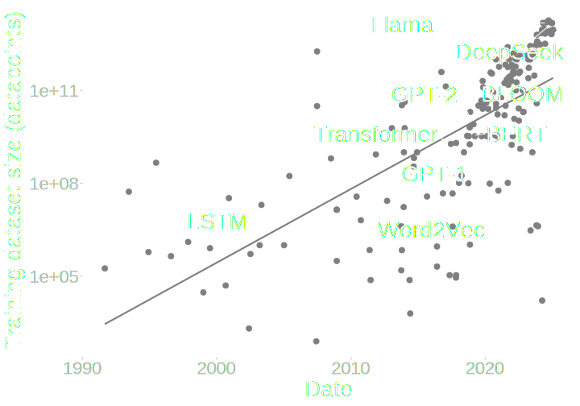
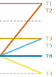

Big_Data(Linguistics)
Roger Yu-Hsiang Lo
2025/02/27
Simon Fraser University
About Me
- Experimental
- Online
- Computational
About Me
- Experimental
- Online
- Computational
- Alexa
- Classical natural language processing techniques
- Large language models (LLMs)
- Prompt engineering
- Fine tuning
- I still engage in academic research
Overview
- How big data can help us understand linguistic diversity or variation, both at the individual and community levels
Computational
Corpus-based
Corpus Phonetics
- (Quality) data
- Empirical validation
- Variation and change
- Frequency of patterns
- Cross-linguistic comparisons

Source: Epoch AI
Roadmap
Speech rate on segmental duration
Cantonese tone merger
Outlook
Corpus(Speech_Rate)
with Prof. Márton Sóskuthy
Research Question
- How can big data tell us about how duration of sounds changes when we talk slowly or faster
- Vowels vs. consonants
- Across multiple languages
Wood (1973); Gay (1978); Port (1981); Miller et al. (1984); Crystal & House (1988); Crystal & House (1990); Plug & Smith (2021)
Dataset Construction
- 9 unrelated languages, with 20+ speakers per language
- A total of 35,968 tokens
Pitt (2007)
Measurement
- Segment duration (C vs. V)
- Local articulation rate
Analysis
- Generalized Additive Model
- Orange line undergoes greater duration adjustment than blue line
Results
- Vs undergo greater duration adjustment than Cs
- Fast: Vs same or shorter than Cs
- Slow: Vs up to 1.5x longer than Cs
Results
- Vs undergo greater duration adjustment than Cs
- Fast: Vs same or shorter than Cs
- Slow: Vs up to 1.5x longer than Cs
Summary
- Across all languages, vowels are “stretchier” than consonants
- Can be partially explained by reference to articulatory mechanisms
- Individual languages still differ from one another
- Subtle cross-linguistic differences in the phonetic implementation of the “same” sound
Reidy (2016); Sundara (2005)
Corpus(Cantonese_Tones)
with Prof. Molly Babel
Tone
- The same syllable pronounced with different pitches has different meanings
- Mandarin: mā ‘mother’, má ‘hemp’, mǎ ‘horse’, mà ‘scold’
- Fundamental frequency (F0)
- má ‘hemp’

- má ‘hemp’

Cantonese Tone Mergers
- T2 and T5 are merging
- T3 and T6 are merging
- T4 and T6 are merging
So (1996); Bauer et al. (2004); Mok et al. (2013); Fung & Lee (2019); Zhang (2019); Nagy et al. (2024)
Research Question
- How can big data help us understand Cantonese tone mergers?
- Bypass limitations of previous studies:
- F0 estimates less robust
- F0 trajectories overly simplified
- Duration normalized away
Data: SpiCE
- Speech in Cantonese and English
- 34 early Cantonese-English bilinguals

Johnson et al. (2021)
Data: SpiCE
- Speech in Cantonese and English
- 34 early Cantonese-English bilinguals
Johnson et al. (2021)
Measurement
- Duration
- F0
- A total of 99,416 tokens
Kawahara (1998)
Analysis: Generalized Additive Model
F0 ~ Tone + Prev_tone + Post_tone + Onset_type + Coda_type + Prop_utt +
s(Ref_point, by = Tone, k = 10, bs = "tp", m = 2)
s(Character, bs = "re") + s(Position_in_word, bs = "re") +
s(Gender, bs = "re") +
s(Ref_point, Talker:Tone, k = 10, bs = "fs", m = 2),
family = scat(link = "identity")Wood (2011); Sóskuthy (2017)
Results: Pitch
- Predicted F0 trajectories for an average talker

Results: Pitch
- Predicted F0 trajectories for an average talker
Results: Pitch
- Talkers exemplify different (non-)merger patterns
Results: Duration
- Merging pairs still retain duration difference at the community level
Results: Duration
- Merging pairs still retain duration difference at the community level
- … and at the individual level
Summary
- The different merger patterns at the individual level, reflecting the heterogeneity of the speech community
- The neutralization between reported merging tone pairs appear to be incomplete, when duration is taken into account
Outlook(My_Research)
AI and Human Cognition
- Categorical perception
AI and Human Cognition
- ML provide a formal framework to model human cognitive systems
Martin et al. (2023); de Heer Kloots & Zuidema (2024); Liu et al. (2024)
Corpus Linguistics and Beyond
Data collection
Combination with exp. work
Methodology
Tools
Speech corpora of multilinguals
Perception
Bayesian modeling
Automatic speech recognition
Database management
Thank you!
Questions and comments welcome
roger.lo@ubc.ca